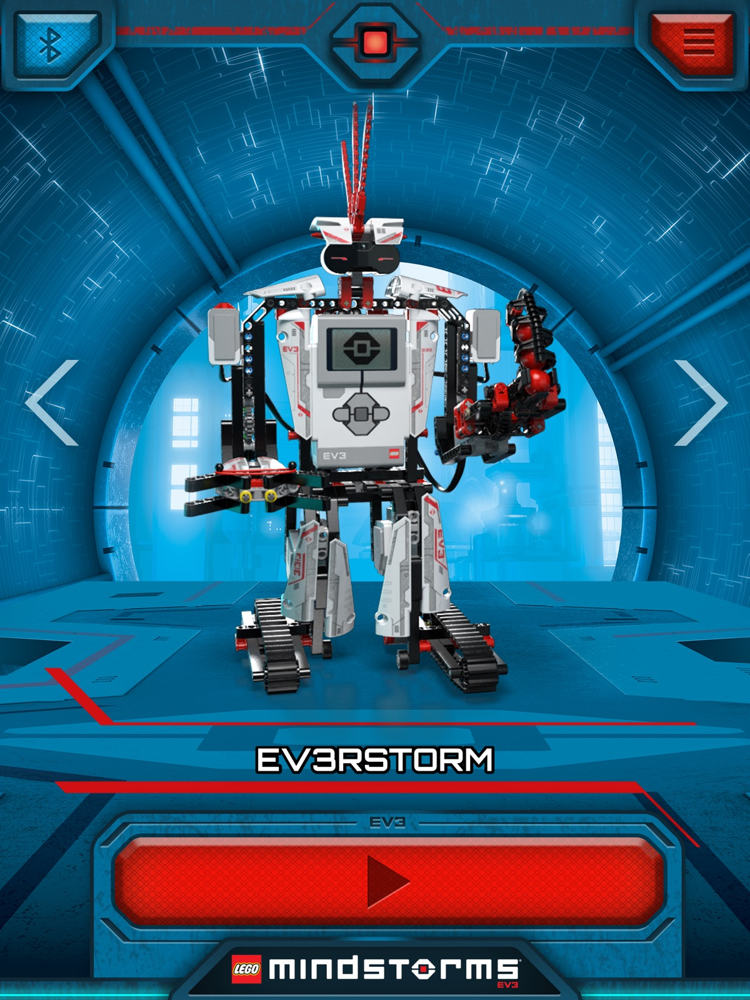
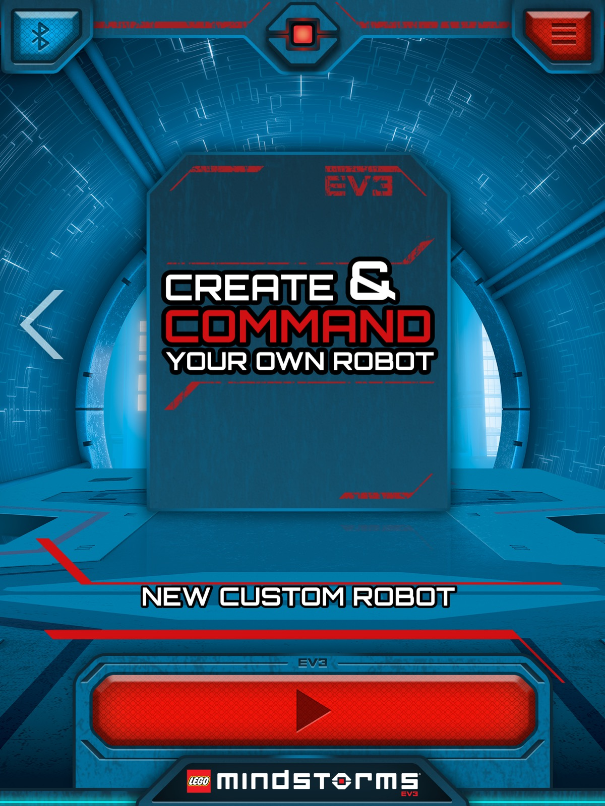
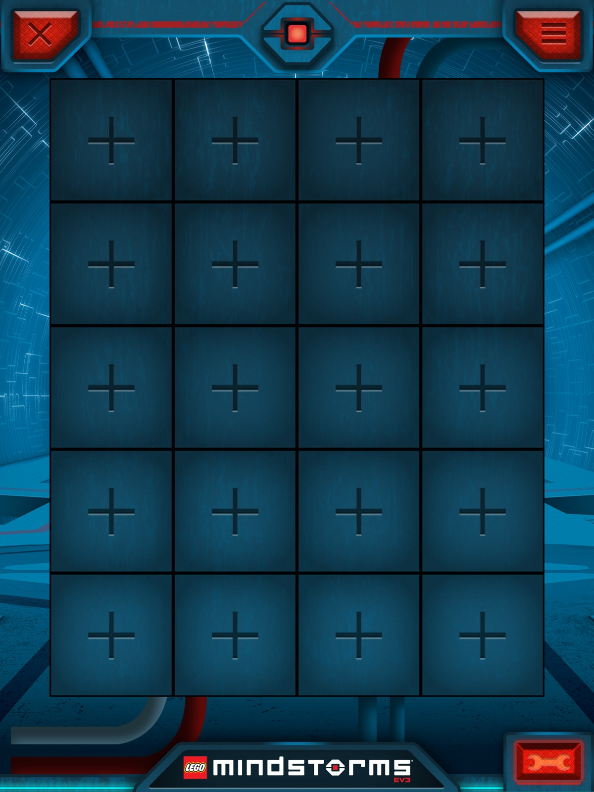
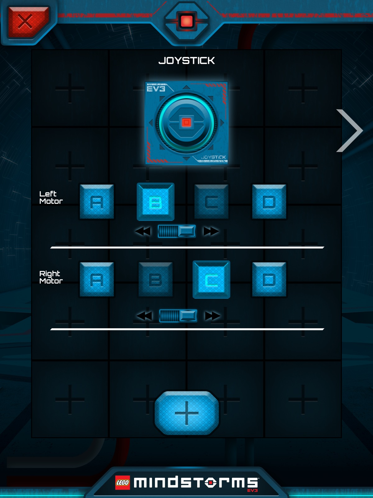
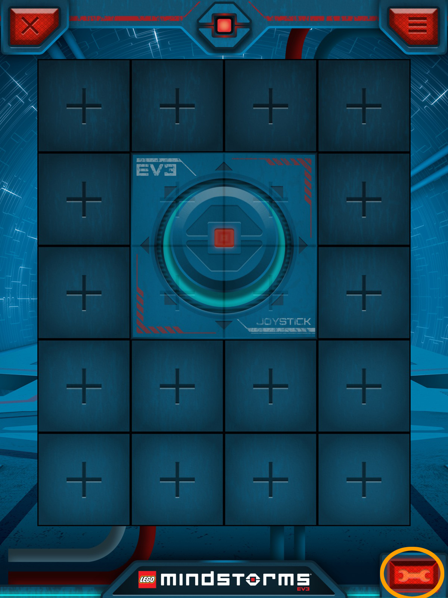
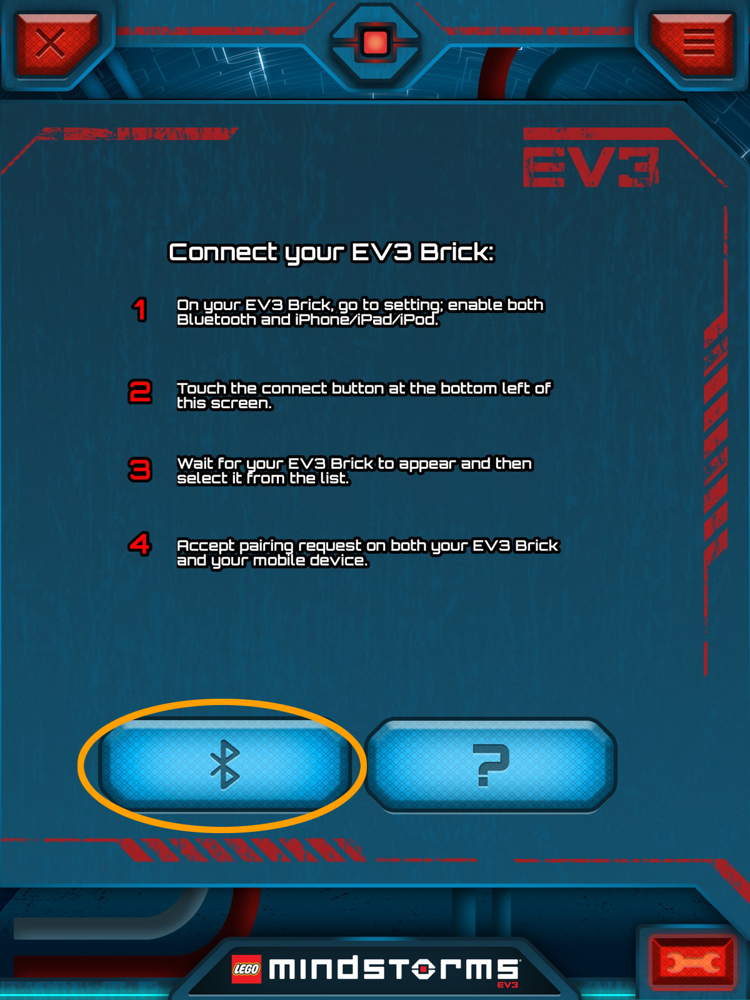

Construiremos para las 4 actividades el mismo robot base. A través de la aplicación en el móvil o la tablet, utilizaremos el dispositivo como mando a distancia, para realizar las diferentes competiciones.
Construiremos el robot base mediante las siguientes instrucciones.

Para poder controlar el robot, utilizaremos la aplicación LEGO MINDSTORMS COMMANDER.
Podemos descargar la aplicación en:
- Para Android:
LEGO MINDSTORMS COMMANDER
- Para IOS:
LEGO MINDSTORMS COMMANDER
A la hora de utilizarlo por primera vez, tenemos que configurar la pantalla de control.
Abrimos la aplicación. Nos aparecerá la pantalla principal con los distintos montajes.

Le damos a la derecha hasta que nos aparezca la pantalla de creación de nuestro mando a distancia.

Pulsamos al boton rojo o sobre la imagen y entraremos a la pantalla de diseño de nuestro mando.

Pulsamos en el centro de la pantalla para añadir el mando y nos aparecerán una serie de controles que podemos añadir. Nosotros seleccionaremos el primero que aparece aunque los chicos pueden investigar una vez que sepan como hacerlo.

Ahora, en esta pantalla, configuraremos nuestro mando indicando el puerto donde tenemos enganchados cada
uno de los motores. Si vemos que el robot cuando lo manejemos hace lo contrario a lo que le indicamos, bajo
los puertos hay unboton con dos posiciones para hacerlo controlar el motor en un sentido o en el contrario.
Para añadirlo a nuestra pantalla, pinchamos en "+", quedando añadido.

Ya lo tenemos configurado y para poder utilizarlo tan solo nos queda conectar los dispositivos via bluetooth. Para ello pulsaremos en la llave de la parte inferior derecha.

Antes de poder empezar a manejar nuestro robot, nos pide que lo conectemos via bluetooth. Pinchamos en el
símbolo de bluetooth y buscamos nuestro robot. Una vez conectado, podemos empezar a manejarlo para poder
participar en todas las competiciones que vamos a realizar.
A partir del motaje básico, cada equipo puede tunear su robot para adaptarlo al tipo de competición.
Se realizarán sobre una mesa de gran tamaño con bordes a los lados para evitar la caida de los robots o en su defecto en el suelo.
Se necesita:
- Dos porterías hechas con cualquier material.
- Una pelota.
Se delimitará el terreno de juego y se pondrán las porterías en los extremos. Dependiendo del número de
participantes y del tiempo disponible, se puede organizar un único partido con todos los equipos, turnándose
el dispositivo entre los distintos miembros del equipo o bien organizar una liguilla.
Para poder llevar la pelota hasta la portería contraria, cada equipo podría adaptarle a su montaje una
base para que se pudiera conducir la pelota con mayor facilidad.
Se necesita:
- Cualquier tipo de obstáculo, desde sillas y mesas si se hace en el suelo hasta cajas, libros o botes si
se hace sobre una mesa.
Se hará un circuito con distintos obstáculos que los participantes deberán de sortear para llegar el primero
a meta. Se pueden turnar los miembros del equipo durante la carrera o que cada integrante participe en una
carrera distinta.
En este caso, las modificaciones del robot consistiran en diseño aerodinámico o para aquellos más atrevidos
en multiplicar la velocidad a través de engranajes.
Se necesita:
- Cinta aislante (preferiblemente negra).
Delimitaremos un tatami con forma redonda o cuadrada con cinta aislante en el que
se participará de dos en dos. El reto consiste en echar al oponente del ring a base de empujarlo o voltearlo
para que no pueda seguir compitiendo.
Para esta competición, las mejoras consistirán en hacer al robot mucho más robusto que tu contrincante, o
incluso en construir una especie de rampa o cualquier tipo de artilugio en la parte delantera para intentar
voltearlo.
Se necesita:
- Palillos
- Globos
En esta competición participarán todos los equipos al mismo tiempo. Colocaremos unos palillos en la parte
delantera y un globo en la parte trasera de nuestro robot. En un espacio libre, colocaremos a cada
participante en una esquina y a la señal intentarán explotar el globo del resto de rivales.
La competición puede hacerse de dos formas:
- El rey de la pista: cada equipo se va sacando del campo de juego según le vayan explotando el globo y
gana el que quede el último en la pista. En este caso puede que si se alarga mucho haya equipos que se a
burran al no participar y eso no es bueno
- Por puntos: segun se van pinchando globos se le suma un punto al equipo que lo pincha y se le vuelve a
colocar un globo nuevo al equipo al que se lo han pinchado integrándolo de nuevo a la competición.
En este caso no merece la pena modificar la base construida.